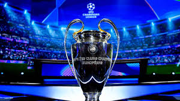

INFO DE LA UEFA CHAMPIONS LEAGUE (estadisticas)
Destacados de la UCL
Los maximos goleadores y asistidores de la UEFA CHAMPIONS LEAGUE son:
Jonathan David, 6 goles y 3 asis, 9 G/A.
Serhou Guirassy, 6 goles y 2 asis, 8 G/A.
Raphinha, 6 goles y 2 asis, 8 G/A.
Robert Lewandowski, 7 goles.
Charles De Ketelaere, 3 goles y 4 asis, 7 G/A.
Harry Kane, gole y 1 asis, 6 G/A.
En esta competición es para destacar lo que están haciendo los jugadores Charles De Ketelaere con el Atalanta y Jonathan David con el
LOSC, lo de Jonathan es llamativo ya que tambíen es el goleador de la Ligue1 con 11 goles pero no podemos dejar atrás a los otros 3 como Kane,
tito lewa y Raphinha que además de ir en buen nivel en la UCL tambíen destacan en sus propias ligas.
